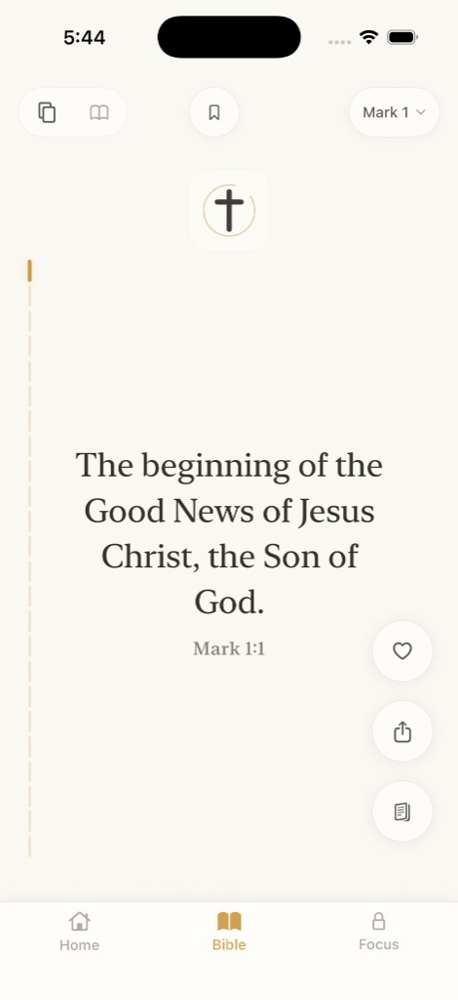
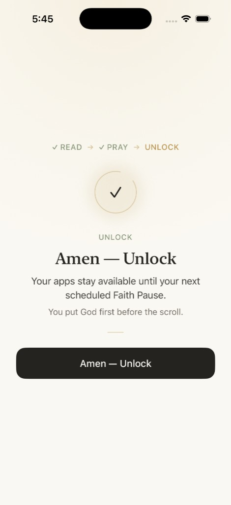
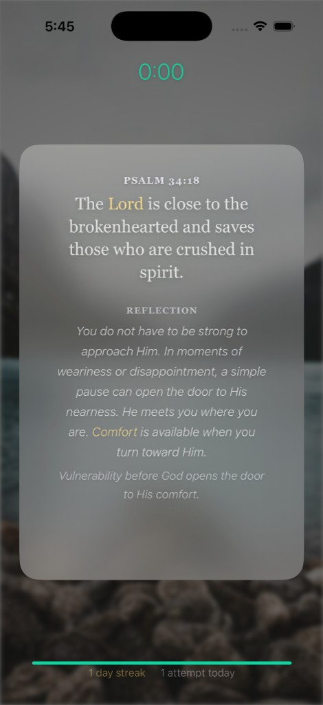
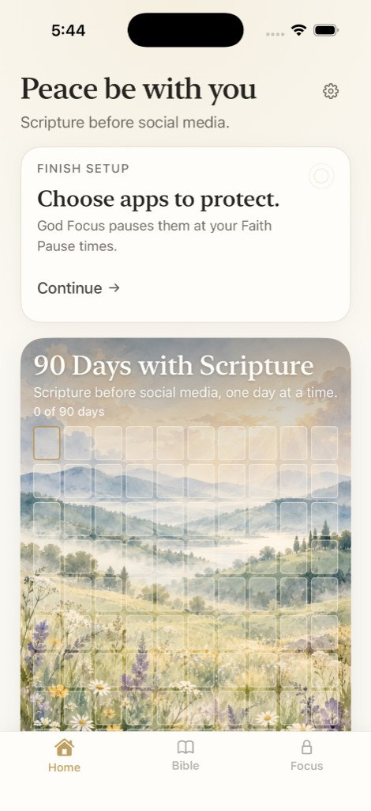

Choose what matters
Select the apps and Faith Pause times that belong to this rhythm.
God Focus
Put God before the scroll.
Schedule a Faith Pause for the apps that pull at your attention. When it’s time, pause, read Scripture, pray, and return with intention.


How it works
God Focus helps you put Scripture and prayer before distracting apps through scheduled Faith Pauses.

Select the apps and Faith Pause times that belong to this rhythm.
At your chosen time, Apple Screen Time pauses the selected apps.
From a blocked-app flow, begin with a short passage of Scripture.
Take a short time to pray before returning to what you opened.
Complete the Faith Pause, then return to the app you chose to protect.
Bible
God Focus is also a calm place to read Scripture, discover passages, and keep a simple daily rhythm.
Read Scripture in a quiet vertical reading experience.
Open chapters and continue reading in a familiar book-and-chapter view.
Enter curated Scripture stories and passages when you want a place to begin.
90 Days with Scripture
Each qualifying day with Scripture moves your 90 Days progress forward. It is a cumulative reading rhythm, not a promise of transformation. A day streak is there if you want a quieter measure of consistency. You can also save verses to return to later.

Designed around privacy
God Focus uses Apple’s Screen Time APIs to apply pauses to the apps you choose. The protected-app identities and Apple FamilyControls tokens used for shielding stay on your device. They are not sent to God Focus product analytics.
God Focus
Scripture before social media.
Download on the App Store